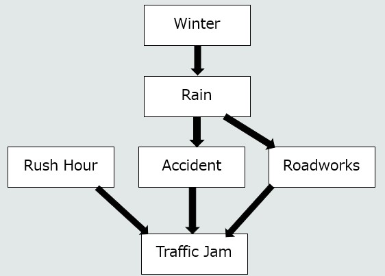

Week 6 - probabilistic AI
Guided Learning - click to view
Guided learning is additional material for you to read outside of class time
Bayes' Theorem
As the name implies, Bayesian networks are underpinned by Bayes' theorem
This week I am providing you with a video to watch that gives a nice example packed background on Bayes' theorem
Lab 1 - Task
Today we are developing a simple probabilistic AI system. Your job will be to make decisions when you don't have complete information.
Tasks
- Estimating Probability from Observed Data
Here is a simple dataset:
Using python, calculate the answer to the following questions:students = [ {"flu": True, "fever": True, "cough": True}, {"flu": True, "fever": True, "cough": True}, {"flu": True, "fever": False, "cough": True}, {"flu": True, "fever": True, "cough": False}, {"flu": False, "fever": True, "cough": True}, {"flu": False, "fever": False, "cough": True}, {"flu": False, "fever": False, "cough": False}, {"flu": False, "fever": True, "cough": False}, ]- How many students are in the dataset?
- How many have flu?
- What proportion have flu?
- How many have a fever?
- What proportion have a fever?
- How many have both flu and fever?
- What proportion of students have both flu and a fever?
- Conditional probability
Among students who have a fever, how many have flu?
- First, identify the students who have a fever.
- Of those students, how many have flu?
- What proportion of students with a fever have flu?In probability notation: P(Flu | Fever)
Is P(Flu | Fever) the same as P(Flu)?
- Moving Towards Bayes
Calculate both of the following:
P(Fever | Flu)
P(Flu | Fever)Are they the same? Why?
Consider the following:
- 10% of students have flu.
- 80% of students with flu have a fever.
- 20% of students without flu have a fever.
Assume there are 1,000 students
Use the information above to complete the following table:
Flu No Flu Total Fever ? ? ? No Fever ? ? ? Total ? ? 1000 Now answer the question:
Among the people with fever, what proportion have flu?If you are successful, you will have just calculated Bayes Theorem
- Build a Suspicious Login Detector
Congratulations. You've just learned how to reason probabilistically about freashers flu from our dataset. Now you're going to use exactly the same idea to detect suspicious logins.
Here is a new dataset:
logins = [ {"suspicious": False, "new_device": False}, {"suspicious": False, "new_device": False}, {"suspicious": False, "new_device": True}, {"suspicious": False, "new_device": False}, {"suspicious": True, "new_device": True}, {"suspicious": True, "new_device": True}, {"suspicious": True, "new_device": False}, {"suspicious": False, "new_device": False}, {"suspicious": True, "new_device": True}, {"suspicious": False, "new_device": False}, ]Calculate:
The prior
- P(Suspicious)
- P(NotSuspicious)The likelihoods
P(NewDevice | Suspicious)
P(NewDevice | NotSuspicious)Now use Bayes' theorem:
If a student logs in from a new device, what is the probability that their login is suspicious?
Whilst looking at the result, consider if you would block this login.
Always remember, there is a difference between something being suspicious and the decision of whether or not to flag it! - More Evidence
By this stage your suspicious login detector works, but let's be honest, it is simplistic and prone to false positives.
Fortunately, a new device isn't the only thing that might indicate a suspicious login.
Below is a table. You will notice that it adds "unusual time" in to the mix. With Bayes theorem we can simply combine multiple sets of evidence as done in the table and the calculation becomes the same: Below is a table that adds "unusual time" to the available evidence.
For now, we will treat "new device AND unusual time" as a single combined piece of evidence.Suspicious Not Suspicious Total New device AND unusual time 15 5 20 Everything else 10 70 80 Total 25 75 100 If a student logs in from a new device AND at an unusual time, Based on the table, what is the probability that the login is suspicious?
Bare in mind, this is about logins at a university, many of which will be students. Would that make unusual time useful evidence for detecting suspicious logins?
Why?
Lab 2 - Task
Today we are simply going to extend a Bayesian Network based off what you observed in the lecture
You can find the lecture example here
First, in order to run this program, we are going to need a couple of libraries:
pip install pgmpyJust to note, the above install will take a little longer than you are used to.
In addition, I also used the library 'daft' to output the model graphically:
pip install daftOk! Now we should be ready to go.
Tasks
- Simply run the provided example. Provide see what outcomes you get when you provide it different values (or do not provide certain values). Don't forget, you can also go backwards.
- See the diagram below, update the provided example so that it now accommodates the new nodes – you will need to make up the CPDs for now.
The order of difficulty (from easiest to hardest) is:
- Create 'Winter' node
- Create 'Rush Hour' node
- Update CPDs for 'Rain'
- Update CPDs for Roadworks
- Update CPDs for Traffic Jam

Once you have completed that, you now have options!
Option 1
If you would like to continue with Bayesian Networks, then consider the following task to create a system that predicts whether a student will attend a given session:
Target Variable Attendance (Yes/No) — The main variable to predict.
Nodes:
| Node | Description | Parent Nodes |
|---|---|---|
| Weather | Good or bad | - |
| DayOfWeek | Monday to Friday | - |
| AbsenceHistory | Frequency of abscences | - |
| UpcomingAssessment | Whether an assessment is scheduled soon | - |
| MotivationLevel | Student's current motivation | AbsenceHistory, UpcomingAssessment |
| Attendance | Whether the student attends today | AbsenceHistory, MotivationLevel, DayOfWeek, Weather |
Option 2
For those that would like something else to learn. We are soon starting the machine learning aspect of the module. This means that dealing with large volumes of data and performance is important.
You have been mostly using Python data structures like lists, but soon we will mostly be using arrays!
In Python we do this using the numpy library.
Have a look through the W3Schools numpy tutorial. You only need to cover the 'basics' but it is helpful to know this ahead of when we work with data.